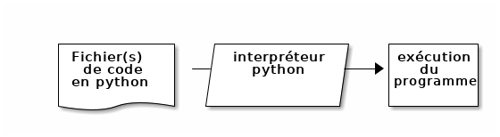
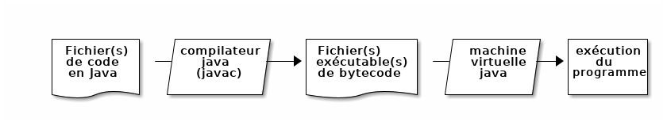
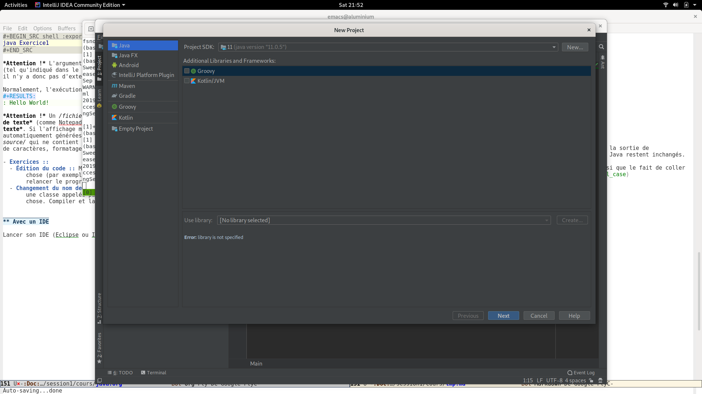
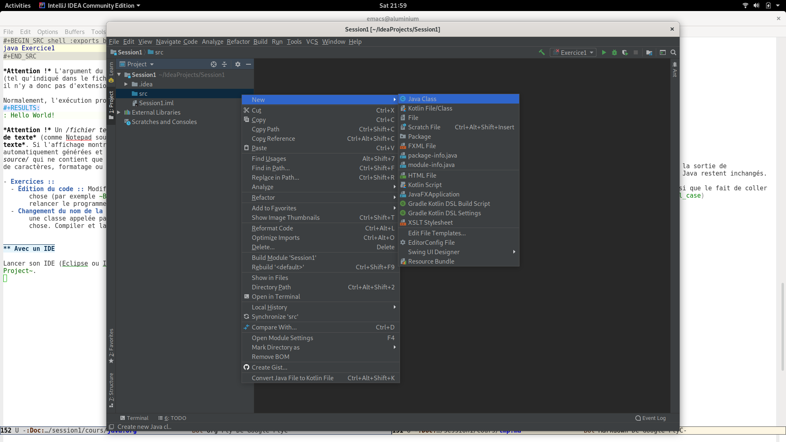
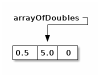
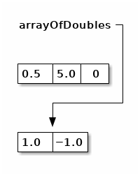
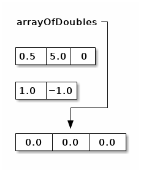
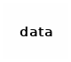
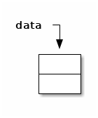
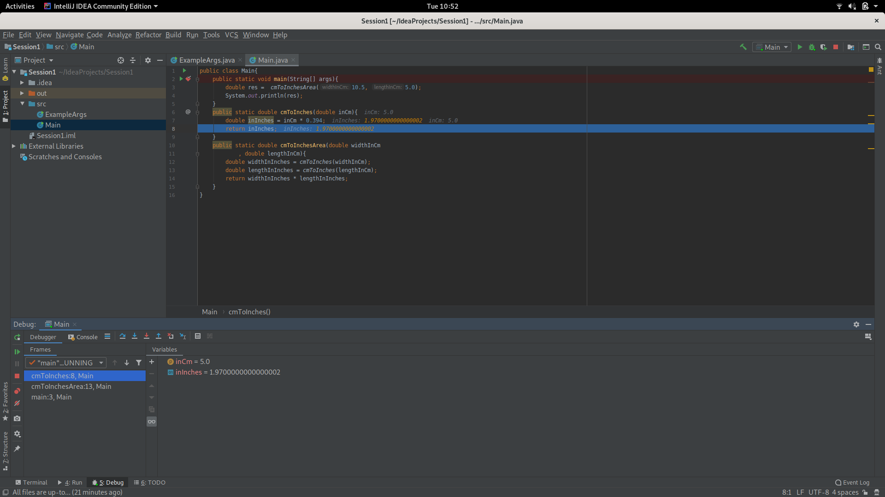

Découvrons Java
Table des matières
1 Un arôme de Java
Java est un langage de Programmation Orientée Objet. Nous verrons plus tard ce que cela signifie, mais pour l'instant, ce qui est important c'est que Java ne se contente pas de permettre la programmation orientée objet, il l'impose, contrairement à python qui, lui nous a permis d'écrire de petit scripts, voir d'exécuter des bouts de code sans fioritures.
Java a été conçu pour une utilisation professionnelle en entreprise et nombreuses de ses caractéristiques, non seulement ce qu'il permet mais aussi ce qu'il empêche (par exemple d'écrire de simples petits bouts de code1).
Ainsi, le moindre programme Java exige :
- de choisir un nom pour l'unité de code (une classe, cf. infra) que l'on va écrire, par exemple "Exercice1"2
- de créer un fichier portant exactement ce nom et l'extension
.java. - d'écrire dans ce fichier le code ci-dessous :
public class Exercice1 { public static void main(String[] args){ /* Écrire ici le code à exécuter */ } }
/* et */ délimitant un bloc de commentaires (// indiquant un commentaire jusqu'à la fin de la ligne, comme # en python).
1.1 Java, un langage compilé
Alors qu'il suffisait de passer en argument le fichier contenant du code en python à l'interpréteur Python, il n'en est pas de même pour Java. En effet, il y a une phase intermédiaire : la compilation.


Cette décomposition en deux étapes distinctes (compilation puis
exécution) a évidemment des avantages (performance et surtout
fiabilité, cf. infra.) mais lorsqu'on développe un programme en Java,
on passe son temps à écrire du code et à l'exécuter et l'on a pas
envie de devoir répéter la même séquence en lançant à chaque fois le
programme javac (pour compiler) puis le programme java (pour
exécuter). Pour cette raison, les environnements de développement
intégrés (IDE en anglais) réalise automatiquement la phase de
compilation lorsqu'on clique sur le bouton Run 3 qui est une flèche
verte sous IntelliJ et une flèche blanche dans un rond vert sous
Eclipse.
2 Premier programme Java
Pour bien comprendre comment fonctionnent l'édition la compilation et
le lancement d'un programme java, on va d'abord effectuer les différentes étapes avec différents programmes (un éditeur de texte, le compilateur javac, le programme java qui lance la machine virtuelle java (JVM), en mode console. Ensuite, on utilisera un Environnement de Développement Intégré (IDE).
2.1 En mode "console"
Éditer un fichier texte avec le contenu suivant :
public class Exercice1 { public static void main(String[] args){ System.out.println("Hello World!"); } }
Comme indiqué plus haut, il ne faut pas s'inquiéter si les couleurs ne sont pas les mêmes : il s'agit juste de Coloration syntaxique.
Le compiler en utilisant le programme javac :
javac Exercice1.java
Pour que la commande javac soit utilisable, il faut :
- avoir installé le Java Development Kit (JDK) à ne pas confondre avec le Java Runtime Environment (JRE) qui ne contient que
javaet nonjavac. On s'assurera d'avoir au moins la version 8 de java. - avoir fait en sorte que les programmes exécutables
javacetjavasoient reconnus comme commandes (par exemple en ajustant la variable d'environnement PATH).
On peut constater que le résultat de la compilation est la création du fichier .class correspondant au fichier .java :
ls -l Exercice1.*
| -rw-r–r-- | 1 | bernard | bernard | 424 | Sep | 28 | 20:47 | Exercice1.class |
| -rw-r–r-- | 1 | bernard | bernard | 114 | Sep | 29 | 00:51 | Exercice1.java |
- Exercice
- Regarder quelles sont les arguments optionnels du
programme
javacet essayer d'en utiliser quelques uns.
L'exécuter en utilisant le programme java :
java Exercice1
Hello World!
Attention ! L'argument du programme java est le nom de la classe
(tel qu'indiqué dans le fichier source à la ligne public class Exercice1), il n'y a donc pas d'extension de nom de fichier (ni .class ni -encore moins!- .java).
Normalement, l'exécution produit l'affichage suivant :
Hello World!
Attention ! Un fichier texte doit être créé/édité avec un éditeur de texte (comme Notepad sous Windows) et non pas un traitement de texte. Si l'affichage montre parfois des couleurs, celles-ci sont automatiquement générées et ne sont pas stockées dans le fichier source qui ne contient que du texte brut, sans indications de police de caractères, formatage ou colorisation.
- Exercices
-
- Édition du code
- Modifier le programme pour qu'il affiche autre
chose (par exemple
Bonjour tout le monde !). Recompiler et relancer le programme. - Changement du nom de la classe
- Faire un autre programme, dans
une classe appelée par exemple
Exercice2, qui fasse la même chose. Compiler et lancer ce nouveau programme.
2.2 Avec un IDE
Lancer son IDE (Eclipse ou IntelliJ) et choisir dans les menus File → New → Project… ou Java Project.

Puis, le répertoire src de ce projet étant sélectionné dans
l'arborescence de projets (par défaut à gauche de la fenêtre),
sélectionner New → Java Class ou Class dans le menu contextuel
(bouton droit).

Choisir un nom de classe, par exemple ExerciceIde1, en laissant le nom de package vide (cf. infra), et éditer le code pour avoir un programme (donc avec un public static void main(String[] args)) qui fasse un affichage (donc avec un System.out.println(/* ce qu'on veut afficher/*);).
2.3 Un début d'explications
Dans tout ce qu'il faut écrire pour avoir un programme en Java, la
plupart des mots-clés nécessitent des concepts qui ne seront abordés
que plus tard. On peut néanmoins expliquer l'argument args de
public static void main(String[] args). Il
s'agit d'un argument de fonction, comme on a pu les voir en python. À
la différence de python, pour un argument, ici args, on ne se contente pas de mettre le nom de l'argument (on aurait bien sûr pu choisir n'importe quel autre nom légal comme arguments ou programArguments), mais on préfixe le ou les arguments par leur type, ici String[]. Ici, on sait donc que l'argument est un tableau de chaînes de caractères.
On peut modifier le code compilé et exécuté en ligne comme ci-après :
public class ExampleArgs{ public static void main(String[] args){ System.out.print("Hello "); System.out.println(args[0]); } }
(ExampleArgs plutôt que ExempleArgs n'est pas une faute de
frappe : il est bon de programmer in English et autant s'y mettre
aussi tôt que possible !)
On peut ensuite compiler ce programme :
javac ExampleArgs.java
Et l'exécuter avec un argument pour afficher le résultat attendu :
java ExampleArgs Yall
Attention ! Si l'on veut passer un argument contenant un espace (ou autre caractère séparateur), il faut utiliser des guillemets. De même si l'on veut utiliser des caractères qui ont un sens particulier pour l'interpréteur de commandes de la console :
java ExampleArgs "you all !"
- Exercices
-
- Compréhension de code
- comprendre la différence entre
System.out.print();etSystem.out.println();. - Test de code
- Lancer le programme avec moins ou plus qu'un argument.
- Connaissance de l'IDE
- Modifier le programme écrit avec l'IDE
pour qu'il utilise aussi l'argument de
public static void main(String[] args). Configurer le lancement du programme (sous IntelliJ avec le menuRun→Edit Configurarionspar exemple) pour définir le ou les arguments passés au lancement du programme par l'IDE. - Modification de code
- Pour un programme développé en mode
console et pour un programme développée avec l'IDE, changer le
nom de la classe (par exemple de
public class ExampleArgsàpublic class ExampleArgsRenamed), en faisant en sorte de toujours pouvoir lancer le programme !
3 Conventions
En France, techniquement on peut rouler à gauche. En pratique, on impose des contraintes par le code de la route, afin que les automobilistes puissent partager la route sans avoir à se concerter à chaque fois pour faire émerger un consensus local. Il en va de même pour le développement informatique, qui comporte des conventions parce qu'il met en jeu des équipes de développement. Ainsi, on aurait pu techniquement appeler notre classe example_args mais la convention impose de respecter le CamelCase en commençant par une majuscule pour un nom de classe en Java.
De même pour l'indentation qui, si elle n'est pas fixée par le langage Java lui-même (contrairement à Python), est imposée par convention. Les IDE permettent de formater automatiquement le code, par exemple sous IntelliJ avec le menu Code → Reformat Code ou le raccourci clavier équivalent Ctrl + Alt + L.
4 Variables et typage
En Java, on va pouvoir définir des variables, qui correspondent à un emplacement mémoire auquel on donne un nom, qui est accessible par un certain code et qui peut stocker un certain type de valeurs.
4.1 Variables locales
Dans un premier temps, on s'intéressera uniquement à ce que l'on appelle des variables locales. Ces variables ne sont accessibles (n'existent !) qu'à l'intérieur du bloc de code dans lequel elles sont déclarées. La restriction de l'accès est un avantage lorsqu'il s'agit de pouvoir décomposer le code pour pouvoir raisonner sur une partie isolée du code sans avoir à ce préoccuper de tout ce qui pourrait interagir avec lui.
Les arguments des fonctions, comme l'argument String[] args de public static void main(String[] args), sont des variables locales, dont la valeur est
initialisée à l'appel de la fonction, par la valeur correspondante (en
cas de liste de plusieurs arguments, selon la position) passée lors de
l'appel de la fonction (pour main, c'est un cas particulier car la
fonction est appelée par la JVM et les arguments sont passés par le
système d'exploitation au lancement du programme.
4.2 Typage statique
Comme on a pu le constater avec l'argument String[] args de public static void main(String[] args), les variables sont déclarées non seulement avec
un nom, mais aussi avec un type.
Par exemple, le bout de code suivant déclare et initialise trois variables locales:
boolean formateur = true; int age = 30; String prenom = "Jules";
Remarque : on peut déclarer des variables sans les initialiser, mais ce n'est pas forcément (euphémisme) une bonne idée.
- Exercice
Dans un programme Java, effectuer les déclarations sans initialisations ci-dessous. Que peut-on observer ? Essayer d'afficher le contenu de ces variables non initialisées. Que se passe-t-il ?
boolean formateur; int age; String prenom;
Un type définit la nature des valeurs stockables dans cette variable, qui détermine l'ensemble des valeurs représentables et les opérations qu'il est possible de faire sur ces valeurs.
Le fait que ce type soit immuable (les variables ne changent pas de type au cours de l'exécution du programme) et connu à la compilation constitue le typage statique qui permet de vérifier avant le lancement du programme que les types sont corrects. Essayer d'ajouter la ligne suivante à l'intérieur d'une fonction public static void main(String[] args):
args[0]= 1;
Dans un développement en mode console, c'est à la compilation qu'on aurait une erreur :
ExampleArgs.java:5: error: incompatible types: int cannot be converted to String
args[0]= 1;
^
1 error
Dans un IDE, la ligne est immédiatement soulignée en rouge et un indicateur rouge apparaît dans la marge à gauche.
- Exercice
Dans un programme Java développé sous un IDE, écrire les déclarations des variables
formateur,ageetprenomvues plus haut. Écrire ensuite les affectations suivantes :formateur = "Bernard"; age = 44.2; prenom = 'a';
Essayer aussi de faire des affectations entre types primitifs numériques, entre types entiers et types à virgule, et entre types de taille différentes.
5 Types de données primitifs
Java définit un certain nombre de types dits primitifs.
5.1 Types numériques
Il y a deux catégories de types primitifs numériques, suivant qu'on cherche à représenter des nombres entiers ou à virgules. Dans chacune de ces catégories, les différents types correspondent à différentes tailles en mémoire et permette de choisir le compromis entre encombrement mémoire et nombres de valeurs différentes représentables : on peut représenter au maximum 2^N valeurs différentes avec N bits.
5.1.1 Types entiers
En java, tous les types entiers sont dit signés, c'est-à-dire qu'ils peuvent représenter des valeurs positives ou négatives et utilisent la représentation binaire du complément à deux qui représente une valeur de plus strictement négative que strictement positive (dit autrement, autant de valeurs < 0 que de valeurs >= 0).
- byte
- défini sur 8 bits
- short
- défini sur 16 bits
- int
- défini sur 32 bits
- long
- défini sur 64 bits
Lorsqu'on écrit une valeur entière directement dans le code (par exemple 43210, sont type est int. On peut utiliser le suffixe L (l est légal mais déconseillé pour sa ressemblance avec 1) pour indiquer que la valeur doit être de type long.
Attention ! Les opérateurs arithmétiques de base (+, -, *, /) sont tous définis comme produisant un résultat de même type, donc entier. Quel est donc le résultat de 5/2 ? Que se passe-t-il si l'on a des opérandes de différents types numériques ? Faire des hypothèses et les tester.
- Exercice
-
- Compréhension
- Pour chaque type entier, calculer (ou trouver sur internet et comprendre !) les valeurs minimale et maximale qu'il est possible de représenter.
- Écriture / exécution de code
- Pour chaque type entier, essayer
de dépasser les valeurs minimale ou maximale soit directement à
l'initialisation d'une variable, soit par une opération (par
exemple en ajoutant ou en retranchant
1).
5.1.2 Types à virgule
Il est essentiel de bien comprendre que l'on ne peut évidemment pas représenter tous les nombres à virgule dans un ordinateur, puisqu'il y en a une infinité même entre 0 et 1 !
Il y a deux types primitifs de nombres à virgule qui correspondent à deux compromis sur l'encombrement mémoire et la précision & plage des valeurs représentables, selon la norme IEEE754 de représentation en mémoire.
- float
- codés sur 32 bits
- double
- codés sur 64 bits
Il y aura donc forcément un risque d'arrondis dont il faut se méfier. Aussi, le fait que les valeurs soient stockée en binaire trompe notre intuition sur le nombre de chiffres nécessaires pour représenter une valeur à virgule et Java ne nous aide pas en arrondissant lors des affichages de ces valeurs. Ainsi, lorsqu'on écrit 0.1, il faut avoir conscience que l'ordinateur ne peut stocker que la valeur la plus proche possible, à savoir
0.1000000000000000055511151231257827021181583404541015625 pour le type double et 0.100000001490116119384765625 pour le type float.
Lorsqu'on écrit une valeur à virgule 4 son type est double. On peut utiliser le suffixe f ou F Pour que le type soit float.
5.2 Type booléen
En java, le type booléen est boolean et les valeurs s'écrivent true et false.
5.3 Type caractère
En java, le type des caractères est char. Attention ! la standardisation de Java date des
anciennes version d'Unicode qui ne codaient les caractères que sur 16
bits (deux octets). En conséquence, certains graphèmes nécessitent 2
caractères en Java pour être représentés.
Les caractères sont représentés entre guillemets simples en utilisant des séquences commençant par backslash pour représenter les caractères spéciaux :
char letter = 'a'; char newLine = '\n'; char tab = '\t';
6 Types de données gérés par référence
Alors que les types primitifs que l'on vient de voir sont stockés directement en mémoire "dans" les variables, les types que l'on va maintenant voir sont stockés indirectement, les variables "contenant" une référence (on parle aussi parfois de pointeur, il s'agit en fait de l'adresse en mémoire où est stockée la valeur elle-même). Cette distinction aura beaucoup de conséquences très importantes. Lorsqu'une référence n'est pas initialisée, elle a une valeur spéciale null. Essayer d'utiliser une référence valant null comme si elle était une référence valide vers une valeur en mémoire provoquera une erreur classique qu'on devra éviter.
6.1 Types tableaux
On a vu un exemple de tableau avec l'argument de public static void main(String[] args). Un type de tableau est toujours un tableau du type de chacune des cases du tableau (elles sont toutes du même type !), par exemple ici String[] est un tableau de cases de type String (qu'on abordera juste après).
Quelques exemples de déclarations de tableaux :
int[] arrayOfInts; // (référence vers un) tableau d'ints long[] arrayOfLongs; // (référence vers un) tableau de longs float[] arrayOfFloats;// (référence vers un) tableau de floats double[] arrayOfDoubles;// (référence vers un) tableau de double
On remarque que la taille ne fait pas partie du type tableau. On sait que int[] arrayOfInts est un tableau d'entiers 5, mais on ne sait pas de quelle taille. Après ces déclarations, les variables contiennent des références invalides car il n'y aucun tableau créé :
Il est important de comprendre que ces déclarations sans initialisation en créent pas de tableau : il n'y a alors aucun tableau en mémoire, juste des références pour l'instant invalides. On peut initialiser un tableau de différentes façons :
En écrivant directement dans le code les valeurs du tableau entre accolades, séparées par des virgules :
double[] arrayOfDoubles = {0.5, 5.0, -0.75}; arrayOfDoubles = new double[]{1., -1.}; // la taille n'est pas la même
À la première affectation, on a :
 Puis à la deuxième :

Lorsqu'une valeur en mémoire n'est plus référencée, elle ne peut plus être utilisée et la JVM libère la mémoire que cette valeur occupait grâce à un mécanisme appelé ramasse-miettes (garbage collector in English).
En indiquant le nombre de case (par une expression, qui peut donc être calculée dynamiquement 6). Les cases sont alors remplies avec la valeur par défaut du type considéré :
arrayOfDoubles = new double[2 + 1];
Si l'on effectue cette troisième affectation à la suite des précédentes, on a:

Il est important de comprendre que chaque affectation en modifie pas le tableau, ni pour changer son contenu, ni pour changer sa taille, mais affecte la référence sur un autre tableau.
- Exercice
-
- Trouver de l'information et/ou codage exploratoire
- Trouver quelles sont les valeurs par défaut des différents types primitifs.
- Codage exploratoire
- Passer des variables de type tableau en
argument de
System.out.println(). Quel sens donner à l'affichage obtenu ?
6.2 Accès aux éléments d'un tableau
On utilise la notation nomDuTableau[valeurindice] pour accéder à la case d'indice valeurindice du tableau nomDuTableau. Les indices commencent à 0, donc un tableau de taille 1 aura une seule valeur d'indice légale, la valeur 0.
- Exercice
- Que ce passe-t-il lorsque l'on essaie d'accéder à un tableau qui n'a pas été initialisé ? Lorsqu'on essaie d'accéder à une case dont l'indice est trop grand (>= à la taille du tableau) ou trop petit (< 0)?
6.3 Accès à la taille du tableau
Pour un tableau donné, on peut accéder à sa taille avec la notation nomDuTableau.length. La taille est de type int.
- Exercice
- Quelle est la taille maximale d'un tableau en Java ?
6.4 Tableau de tableaux
On peut avoir un type de tableau pour n'importe quel type de
cases. Pour un type X, on peut avoir le type
X[] tableau de X. Par exemple
int[] est le type tableau d'entiers. On
peut donc avoir des tableaux de tableaux par exemple int[][] est le type tableau de tableaux d'entiers.
6.4.1 Déclaration
Avec une simple déclaration, il n'y a aucun tableau en mémoire.
int[][] data;

6.4.2 Initialisation partielle
Si l'on ne crée qu'un seul tableau, il n'y a qu'un tableau qui pourra contenir des références vers des tableaux.
int[][] data= new int[2][];

6.4.3 Initialisation
Il faut initialiser chacune des cases de tableau de tableaux.
int[][] data= {{1,0},{2,-1,0}};

6.5 Type chaîne de caractères
On a vu avec l'argument de public static void main(String[] args) que le type chaîne de caractères est
String. La majuscule en début de nom,
contrairement aux noms de types primitifs comme int, boolean ou float, est importante car elle indique qu'il s'agit du nom
d'une classe, comme les classes que nous sommes obligés de définir
pour écrire un programme en Java.
On écrit une chaîne de caractères dans le code Java en l'entourant de guillemets doubles : "Une chaîne de caractères". Si cette chaîne doit contenu un guillemet double, il faut l'échapper avec une barre oblique inversée (antislash, ou backslash) : "une chaîne avec un \" au milieu".
Les chaînes de caractères sont manipulées par référence, ce qui fait qu'affecter la contenu d'une variable de type chaîne de caractères à une autre variable ne crée pas une copie de la chaîne de caractères mais juste une nouvelle référence vers la même chaîne de caractères : on dit que ces chaînes ne sont pas seulement égales, mais identiques. En pratique, cela ne crée pas de problèmes car les chaînes de caractères sont immuables, c'est-à-dire qu'on ne peut pas modifier leur valeur.
Les opérations qu'il est possible d'effectuer sur une chaîne de caractères sont définies dans la classe String. En plus, il est possible de concaténer des chaînes de caractères avec l'opérateur +.
Une autre particularité des chaînes de caractères est que les valeurs des autres types peuvent être transformées automatiquement en chaînes de caractères lorsque cela est nécessaire. C'est grâce à ce mécanisme qu'on peut par exemple passer n'importe quel type en argument de System.out.println(), par exemple System.out.println(32);, et concaténer n'importe quelle valeur à une chaîne de caractères, par exemple "Nombre de joueurs: "+ 2.
- Exercice
- Comparer les résultats de
"score: " + 2 + 3et2 + 3 +"points".
6.6 Tous les autres types définissables (classes)
On peut définir de nouveau types comme String en définissant de nouvelles classes. Ce que nous verrons dans le cadre de la Programmation Orientée Objet.
7 Structures de contrôle
On peut exécuter des blocs d'instructions de façon conditionnelle et/ou répétée grâce aux structures de contrôle. En java, on retrouve l'équivalent de celles vues en python. Particulièrement lorsque l'on a programmé en python, il faut faire attention :
- au fait que les blocs de code sont délimités par des accolades
{et}et non par l'indentation et qu'il n'y a pas de:pour marquer le début de bloc. - au fait que les blocs sont théoriquement optionnels et qu'en l'absence de bloc explicite, la structure de contrôle porte sur une seule instruction.
- que l'instruction vide
;est une instruction valide ! (qui ne fait rien)
7.1 Exécution conditionnelle
7.1.1 Expression booléennes
Une expression booléenne élémentaire est souvent réalisée avec un
opérateur de comparaison : <, >, <=, >=, !=, ==.
- Exercice
- Faire un programme qui affiche des résultats de
comparaisons. Quelle est la valeur de
0.3 == (3*0.1)? Pourquoi ?
On peut composer des expressions booléennes à l'aide d'opérateurs logiques :
- &&
- ET logique dont le résultat est
truesi et seulement si les deux opérandes valenttrue. - ||
- OU logique dont le résultat est
truesi un moins un des opérandes (l'un ou l'autre ou les deux!) vauttrue. - ^
- OU EXCLUSIF dont le résultat est
truesi un et un seul un des opérandes vauttrue. - Exercices
- Codage exploratoire
- Écrire un petit programme qui met en œuvre les opérateurs logiques.
- Compréhension
- Que fait le bout de code suivant ? Comment ? Pourquoi ?
int idx = -1; boolean[] data = {true, false, true}; boolean win = (idx >=0 ) && data[idx]; boolean fail = data[idx] && (idx >= 0);
7.1.2 if
if (expressionBooleenne){ /* Code à exécuter si la valeur de expressionBooleenne est true */ }
if (expressionBooleenne){ /* Code à exécuter si la valeur de expressionBooleenne est true */ }else{ /* Code à exécuter si la valeur de expressionBooleenne est false */ }
- Exercice
- Écrire un petit programme qui met en œuvre la structure
de contrôle
ifavec plusieurs instructions exécutées conditionnellement. Que se passe-t-il l'on oublie les accolade ou si l'on ajoute un;:if(uneExpressionBoolenne);avant le bloc.
7.1.3 Opérateur ternaire
On a vu des opérateurs binaires, arithmétiques et logiques, qui ont
donc deux arguments. Il existe un opérateur particulier, l'opérateur
ternaire, qui prend trois arguments, séparés donc par deux symboles
? et :, sous la forme expressionBooleenne ? expressionSiVraie : expressionSiFausse. L'évaluation de
l'expression commence par évaluer l'expressionBooleenne. Si et
seulement si cette expression est vraie, alors l'expressionSiVraie
est évaluée et constitue la valeur de l'expression ternaire. Sinon,
alors seule l'expression expressionSiFausse est évaluée et constitue
la valeur de l'expression ternaire. L'expression booléenne doit être
de type booléen. Les deux autres expressions peuvent être de n'importe
quel type qui constitue donc le type de l'expression ternaire.
- Exercice
- Écriture de de code
- Écrire un programme qui utilise un opérateur ternaire.
- Compréhension
- Que fait le code suivant ? Pourquoi ?
boolean[] data = {true, false, false, true, true}; int idx = -1; System.out.println( (idx >= 0) ? data[idx] : false);
7.1.4 switch
Parfois, on veut comparer la valeur d'une expression avec un ensemble de valeurs connues pour exécuter différents blocs de code en fonction de la valeur. Par exemple :
public static long arithmeticOp(long i, long j, char op){ long res=0; if (op == '-'){ res = i - j; } else if (op == '+'){ res = i + j; } else if (op == '*'){ res = i * j; }else if (op == '/'){ res = i / j; }else{ System.err.println("Operation "+ op + "inconnue !!!"); } return res; }
Même si le fait de ne pas ouvrir un nouveau bloc pour chaque
else ne contenant qu'un seul
if permet d'éviter de s'enfoncer dans les
niveaux d'indentation, il est fastidieux de répéter le
else if (op == …).
Pour éviter ces répétitions, Java possède une structure de contrôle dédiée : le src_java[:export code](switch).
Le code précédent s'écrirait avec un src_java[:exports code](switch). de la façon suivante :
public static long arithmeticOp(long i, long j, char op) { long res = 0; switch (op) { case '-': { res = i - j; break; } case '+': { res = i + j; break; } case '*': { res = i * j; break; } case '/': { res = i / j; break; } default: { System.err.println("Operation " + op + "inconnue !!!"); } } return res; }
L'expression testée doit être d'un type entier, ou de type
char, ou de type String.
- Exercice
- Faire tourner un programme utilisant la fonction
arithmeticOp. Que se passe-t-il si l'on enlève les instructionsbreak;? À quoi sert-elle ? Ajouter la gestion de l'opérateur modulo pour le caractère%.
7.2 Boucles while(){} et do{} while();
Lorsque des opérations doivent être répétées plusieurs fois, éventuellement 0 ou 1 fois au minimum, on peut utiliser,respectivement, les structures de contrôle suivantes :
- while
qui effectue le test avant de (re)commencer éventuellement exécuter le bloc de code
while(expressionBooleenne){ /* corps de la boucle : instructions à répéter */ }
- do while
qui effectue le test après avoir exécuté (donc au moins une fois) le bloc d'instruction, pour recommencer éventuellement.
do{ /* corps de la boucle : instructions à répéter */ }while(expressionBoolenne);
Lorsqu'on veut que la boucle puisse s'arrêter (et généralement on le veut !), on doit s'assurer que la condition de répétition puisse être modifiée par l'exécution du corps de la boucle !
- Exercice
Que se passe-t-il lorsque l'on exécute les codes suivants (
%est l'opérateur modulo qui calcule le reste de la division entière) ? Pourquoi ?int v = 192; int compteur = 0; while (v % 2 == 0) System.out.println("le compteur vaut "+ compteur + " car "+ v+ " est (encore) pair"); v = v / 2; compteur = compteur + 1; System.out.println("le nombre était divisible "+ compteur + " fois par 2";
int v = 192; int compteur = 0; while (v % 2 == 0); { System.out.println("le compteur vaut "+ compteur + " car "+ v+ " est (encore) pair"); v = v / 2; compteur = compteur + 1; } System.out.println("le nombre était divisible "+ compteur + " fois par 2";
7.3 Boucles for(;;){} et for( : ){}
7.3.1 Boucle for classique
Souvent, la condition de continuation est liée à une variable initialisée juste avant et dont la valeur est mise à jour à la fin du bloc répété. Par exemple, pour afficher dix chiffres à partir de 0 :
int compteur = 0; while(compteur < 10){ System.out.println(compteur); compteur = compteur + 1; // on pourrait écrire compteur += 1 ou même ++compteur }
De façon générale :
/* initialisation */ while(testDeContinuation){ /* instructions à répéter */ /* mise à jour pour l'itération suivante */ }
La structure de contrôle for "classique"7 permet justement de regrouper ces trois éléments :
for(initialisation ; testDeContinuation; miseAJourPourLIterationSuivante){ /* instructions à répéter */ }
La boucle affichant les dix chiffres à partir de 0 s'écrira donc :
for(int compteur = 0; compteur < 10; ++compteur){ // ++compteur est ici équivalent à compteur = compteur + 1 System.out.println(compteur); }
De même que pour les boucles while() et
do while();, il faut généralement s'assurer
que la condition de continuation soit modifiée, normalement au niveau
de la partie "mise à jour pour l'itération suivante" de la boucle
for().
- Exercices ::
- Écrire un programme qui affichage les nombres de 9 à 0 inclus.
- Écrire un programme qui calcule et affiche combien de fois un
nombre, par exemple
192est divisible par 2.
7.3.2 Boucle for sur une séquence de valeurs
Lorsqu'on veut traiter toutes les valeurs d'un tableau, par exemple
pour les afficher, on peut utiliser une boucle while ou une boucle for classique :
- boucle while
int[] data = {1, 2, 0, -1, 4, 8}; int i = 0; while(i != data.length){ System.out.println(data[i]); ++i; }
- boucle for classique
int[] data = {1, 2, 0, -1, 4, 8}; for(int i = 0; i != data.length; ++i){ System.out.println(data[i]); }
Que se passe-t-il si l'on essaie d'utiliser la variable
iaprès la boucle ? Noter la différence avec la bouclewhile.
Ce cas de figure est suffisamment fréquent pour qu'une version
spécifique de boucle for ait été ajoutée au
langage Java, avec la même fonctionnalité qu'en Python :
for(TypeElement element : collectionElements){ /* code utilisant la variable element qui prend successivement chacune des valeurs de collectionElements */ }
Par exemple :
int[] data = {1, 2, 0, -1, 4, 8}; for(int v : data){ System.out.println(v); }
8 Fonctions
On va vouloir décomposer son code en unités minimales qui réalise un
calcul ou une tâche, de façon paramétrée. La fonction 8, qui
prend éventuellement des arguments et retourne éventuellement une
valeur, est l'unité de décomposition du code. On a vu un cas
particulier de fonction avec celle qui implémente le programme
principal : public static void main(String[] args). Dans un premier temps, on ne s'attardera pas sur
public static qu'on reproduira à l'identique
pour toutes nos fonctions. void main(String[] args) indique que l'on définit une fonction appelée main qui prend en argument String[] args, donc un tableau de chaînes de caractères appelé
args, et ne retourne rien (void).
Pour appeler une fonction 9, il suffit
d'écrire le nom de la fonction suivi entre parenthèses d'expressions
correspondant aux valeurs à passer aux arguments (cf. infra), séparées
par des virgules (s'il n'y a pas d'arguments, on met des parenthèses
vides). Si la fonction est définie dans une autre classe, il faut
préfixer le nom de la fonction par le nom de la classe 10. Par exemple pour appeler la
fonction random définie dans la classe Math
11, on
écrit:
double x = Math.random();
Les fonctions permettent de décomposer le code d'une application notamment parce que les variables sont locales : on peut donc raisonner localement sans avoir à se demander s'il y a du code ailleurs qui pourrait influencer / être influencé par la valeur des variables utilisées dans la fonction.
8.1 Instruction return
Le bloc d'instructions qui définit une fonction peut contenir zéro,
une ou plusieurs instructions return.
Le seul cas où il peut n'y avoir aucun instruction return dans le
corps d'une fonction est celui des fonctions ne retournant aucun
valeur (ce qui est indiqué par le mot clé void à la place du type de retour, comme dans public static void main(String[] args). Dans ce cas, tout se
passe comme s'il y avait une instruction return; après la dernière instruction du bloc définissant la
fonction. Par exemple :
public static void main(String[] args){ System.out.println("Hello World !"); }
et équivalent à :
public static void main(String[] args){ System.out.println("Hello World !"); return; }
Dans tous les autres cas, il faut que l'exécution du code d'une
fonction indiquant retourner une valeur d'un certain type aboutisse à
l'exécution d'une instruction return expressionDuTypeAttendu;. Par exemple :
public static double cmToInches(double inCm){ double inInches = inCm * 0.394; return inInches; }
Cet exemple utilise une variable locale double inInches pour montrer explicitement le type de la valeur retournée,
mais on aurait pu écrire directement :
public static double cmToInches(double inCm){ return inCm * 0.394; // l'expression inCm * 0.394 est de type double }
Lorsqu'une instruction return est exécutée,
le flux d'exécution quitte immédiatement la fonction. S'il y avait des
instructions après l'instruction return,
elles ne seraient jamais exécutées. Mais le compilateur (ou l'IDE)
signale un erreur lorsqu'on essaie d'écrire un tel code.
- Exercice
- Écrire la fonction
cmToInchesdans un IDE et ajouter du code (par exempleSystem.out.println("Je ne peux pas être exécutée!");après l'instructionreturn. Que se passe-t-il ?
Le corps d'une fonction peut contenir plusieurs instructions
return, lorsqu'une instruction de contrôle de
flux d'exécution (par exemple un if) produit
des chemins d'exécution exclusifs. Par exemple :
public static long fibonacci(long n){ if(n <= 2){ return n; }// on pourrait avoir un else return fibonacci(n-1) + fibonacci(n-2); }
8.2 Passage d'argument
Une fonction peut avoir zéro, un, ou plusieurs arguments, indiqués, avec leur type, entre parenthèses et séparés par des virgules :
public static void fonctionAvecZeroArg(){ /* corps de la fonction */ } public static void fonctionAvecUnArg(int seulArgument){ /* corps de la fonction */ } public static void fonctionAvecDeuxArgs(String premierArgument, float secondArgument){ /* corps de la fonction */ } public static void fonctionAvecTroisArgs(boolean premierArgument, int[] secondArgument, double troisiemeArgument){ /* corps de la fonction */ }
Lors de l'appel d'une fonction, le flux d'exécution quitte la fonction
appelante pour exécuter le corps de la fonction appelée. Soit le
programme suivante, avec une fonction principale public static void main(String[] args) qui appelle une fonction
public static double cmToInchesArea(double widthInCm, double lengthInCm). Cette dernière est à la fois fonction
appelée (par la fonction principale) et fonction appelante, faisant
deux appels à la fonction public static double cmToInches(double inCm) :
public class Main{ public static void main(String[] args){ double res = cmToInchesArea(10.5, 5.0); System.out.println(res); } public static double cmToInches(double inCm){ double inInches = inCm * 0.394; return inInches; } public static double cmToInchesArea(double widthInCm , double lengthInCm){ double widthInInches = cmToInches(widthInCm); double lengthInInches = cmToInches(lengthInCm); return widthInInches * lengthInInches; } }
On peut visualiser son exécution pas à pas en ligne.
- Exercice
- Sous IDE, éditer le code précédent et l'exécuter pas à
pas en mode debug. Pour cela, cliquer dans la marge
à gauche du code au niveau de la ligne
public static void main(String[] args)(bouton gauche sous IntelliJ, menu contextuel sous Eclipse) pour y poser un point d'arrêt (breakpoint). Lancer l'exécution en mode debug (par exemple en cliquant sur le bouton avec un insecte vert). Ensuite, exécuter le code pas à pas en entrant dans les fonctions appelées (step into), par exemple en cliquant sur la flèche vers le bas sous IntelliJ.

8.3 Contexte local d'exécution / pile / fonction récursive
En fait, même si les variables locales sont considérées comme "appartenant" à la fonction dans laquelle elles sont déclarées, les espaces mémoire correspondant sont plus précisément liés au contexte local d'exécution de la fonction lorsqu'elle est appelée. Cela veut dire que de nouvelles variables sont crées à chaque appel de la fonction. La nuance est importante lorsqu'une fonction est appelée plusieurs fois "en même temps", le plus souvent dans le cadre d'appels récursifs (d'où les guillemets à "en même temps"). Une fonction récursive s'appelle elle-même, elle est donc à la fois appelante d'elle-même et appelée par elle-même. À chaque appel de fonction, les variables locales de la fonction appelée sont crées et à chaque retour de la fonction appelée, ces variables locales sont détruites. En pratique, ces variables sont crées dans une pile car ce sont toujours les dernières crées qui sont les premières détruites puisque la prochaine fonction de laquelle on va retourner est toujours la dernière fonction qu'on a appelée.
Pour se convaincre de l'importance du contexte local d'exécution, considérer les fonctions suivantes :
Simple récursion, dont on peut visualiser l'exécution en ligne :
public class Main{ public static void main(String[] args){ long res = factorial(4); System.out.println(res); } public static long factorial(long n){ if(n < 2){ return 1; }// on pourrait avoir un else long res = n * factorial(n-1); return res; } }
Double récursion, dont on peut visualiser l'exécution en ligne :
public class Main{ public static void main(String[] args){ long res = fibonacci(4); System.out.println(res); } public static long fibonacci(long n){ if(n <= 2){ return n; }// on pourrait avoir un else long res = fibonacci(n-1); res = res + fibonacci(n-2); return res; } }
Attention ! On veut toujours que des appels récursifs "s'arrêtent" à un moment donné. Il doit donc toujours y avoir (au moins) une condition d'arrêt dépendant de la valeur des arguments et les appels récursifs doivent faire converger les valeurs des arguments vers la conditions d'arrêt.
- Exercices
-
- Compréhension de code
- Pour les fonctions récursives, vérifier si elles s'arrêtent effectivement.
- Avoir un modèle mental d'exécution
- Exécuter dans sa tête, pas à pas, les programmes précédents.
- Utiliser un IDE
- Exécuter dans un IDE, pas à pas, les programmes précédents.
- Comprendre les messages d'erreur
- Supprimer les conditions d'arrêt des fonctions récursives précédentes et les exécuter. Que veut dire le message d'erreur ?
8.4 Surcharge de fonctions
Une fonction d'une classe est identifiée par sa signature qui doit être unique. Celle-ci est définie non seulement par le nom de la fonction, mais aussi par les arguments (nombre, types) de la fonction. On peut donc définir plusieurs fonctions ayant le même nom. Par exemple :
public static String arrayToString(int[] array){ String res = "["; for(int i = 0; i != array.length; ++i){ res = res + " "+ array[i]; } return res +"]"; } public static String arrayToString(double[] array){ String res = "["; for(double v : array){ res += " " + v; } return res +"]"; }
Cela ne pose pas de problème à Java grâce au typage statique : en effet, à chaque appel de fonction, Java connaît le type des arguments et peut donc choisir l'implémentation ayant la signature correspondante.
- Exercices :
- Implémentation
- Ajouter des implémentations pour les signatures
suivantes :
arrayToString(String[] array),arrayToString(boolean[] array). - Algorithme
- Modifier les implémentations de
arrayToStringpour séparer les valeurs par", "(une virgule puis un espace). On ne veut pas de séparateur avant la première valeur, ni après la dernière valeur !
9 Ce qu'il reste encore à voir
9.1 Entrées/Sorties au clavier/console ou avec des fichiers, Exceptions
9.2 Collections, Généricité
9.3 POO 2 : Entités
9.3.1 attributs
9.3.2 méthodes d'instances
9.3.3 polymorphisme dynamique
10 Références Webliographiques
Quelques liens pour trouver des informations ou faire de la veille sur Java.
10.1 Documentation officielle
- Java tutorials
- Javadoc, documentation de la bibliothèque standard
10.2 Livres consultables en ligne
Notes de bas de page:
Ceci est un peu moins vrai depuis la sortie de JShell, mais les principes du langage Java restent inchangés.
les minuscules et majuscules, ainsi que le fait de coller les mots sont importants ! Cf. CamelCase
ou évidemment lorsqu'on utilise le raccourci clavier équivalent
avec un point . et non une virgule , comme séparateur décimal !
plus précisément une référence vers un tableau d'entiers
pour rappel, dynamiquement veut dire à l'exécution.
depuis la version 5,
Java a ajouté une nouvelle boucle for similaire à son homologue
python, cf. infra
en Programmation Orientée Objet, notamment en Java, on parle de méthodes, ici statiques ou "de classe". Cf. cours sur la POO
En Java, on parle de méthode
statique (cf. le mot-clé static) ou de
classe par opposition aux méthodes d'instance cf. POO
On verra
qu'il faut aussi que la méthode soit visible (ou accessible) depuis le
code appelant. Pour l'instant, l'utilisation du mot-clé
public garantit que nos fonctions sont
accessibles depuis n'importe quel code.
plus précisément java.lang.Math